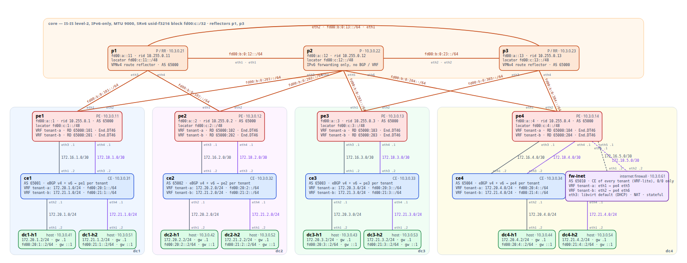

A walkthrough of the srv6-core lab: how an IPv6 segment-routing core carries dual-stack BGP VPNs, traced packet by packet on
VyOS routers you can boot yourself. Every command output below was captured from the running lab
(docs/walkthrough_capture.py); nothing is retyped.
Segment Routing over IPv6 puts the forwarding instructions inside the IPv6 destination address. A router advertises a
prefix — its locator — and every address under it is a SID: "an instruction I will execute if a packet arrives
addressed to me". End means "forward me on", End.X means "send me out this link", End.DT46 means "strip the IPv6
header and look the inner packet — IPv4 or IPv6 — up in this VRF". A packet that must visit several routers carries the list in a
Segment Routing Header (SRH); a packet that needs only one instruction carries none — the SID is the destination.
There is no MPLS, no LDP, no RSVP, no tunnel state in the core: the P routers just route IPv6.
With the uSID (micro-SID) flavour used here, one 128-bit address packs several 16-bit instructions, so even a multi-hop explicit path fits in the destination address alone. The lab shows both forms.

| Layer | What | How |
|---|---|---|
| Core | 3 P routers in a triangle (p1, p2, p3), 4 PEs, one per data centre; IPv6-only links, MTU 9000 | VyOS rolling (FRR 10.6, Linux 6.18) |
| Underlay | IS-IS level-2 carrying loopbacks and SRv6 locators | protocols isis … segment-routing srv6 locator main |
| SRv6 | block fd00:c::/32, /48 locator per node, uSID usid-f3216 (32-bit block, 16-bit node, 16-bit function) |
protocols segment-routing srv6 locator main |
| Overlay | BGP VPNv4 and VPNv6 between PE loopbacks, route reflectors on p1 and p3, SIDs carried in the BGP Prefix-SID attribute | address-family ipv4-vpn / ipv6-vpn, sid vpn per-vrf export auto |
| Tenants | tenant-a (VRF table 100, RT 65000:100) and tenant-b (200, 65000:200), each with one CE-attached dual-stack LAN per DC |
VRF per tenant on PEs and CEs; one eBGP session per address family |
| Sites | CE per DC (VyOS, eBGP to its PE inside the VRF), two Alpine Linux hosts per DC (h1 in tenant-a, h2 in tenant-b) | |
| Resilience | BFD on every core adjacency (300 ms × 3) | protocols bfd |
Addresses to keep in mind: PE loopbacks fd00:a::1-4, P loopbacks fd00:a::11-13; locators fd00:c:<n>::/48 with the
same n; tenant-a LANs 172.20.<dc>.0/24, tenant-b LANs 172.21.<dc>.0/24; hosts are .2, CEs .1. Every tenant prefix
has an IPv6 twin by rule — 172.X.Y.0 ↔ fd00:X:Y::/64 — so dc3's tenant-a LAN is also fd00:20:3::/64, host ::2.
A PE has two core links and therefore two IS-IS adjacencies:
vyos@pe1:~$ show isis neighbor
Area VyOS:
System Id Interface L State Holdtime SNPA
p1 eth1 2 Up 28 2020.2020.2020
p2 eth2 2 Up 30 2020.2020.2020
The locator is a /48 under the block, status Up:
vyos@pe1:~$ show segment-routing srv6 locator
Locator:
Name ID Prefix Status
-------------------- ------- ------------------------ -------
main 1 fd00:c:1::/48 Up
IS-IS advertises it as a prefix like any other, plus SRv6 sub-TLVs describing what the node can do with a segment list (how deep an SRH it can process, how many segments it can push). p1 sees all seven SRv6-capable nodes:
vyos@p1:~$ show isis segment-routing srv6 node
Area VyOS:
IS-IS L1 SRv6-Nodes:
IS-IS L2 SRv6-Nodes:
System ID Algorithm SRH Max SL SRH Max End Pop SRH Max H.encaps SRH Max End D
-----------------------------------------------------------------------------------------
0000.0000.0001 SPF 3 3 2 5
0000.0000.0002 SPF 3 3 2 5
0000.0000.0003 SPF 3 3 2 5
0000.0000.0004 SPF 3 3 2 5
0000.0000.0011 SPF 3 3 2 5
0000.0000.0012 SPF 3 3 2 5
0000.0000.0013 SPF 3 3 2 5
From pe1's point of view every other locator is an ordinary IS-IS route. Note the metrics: fd00:c:11::/48 (p1) and
fd00:c:12::/48 (p2) are one hop away (10), the other PEs two hops (20):
vyos@pe1:~$ show ipv6 route isis | grep fd00:c:
I>* fd00:c:1::/48 [115/0] is directly connected, dum0, seg6local uN, weight 1, 00:33:19
I>* fd00:c:1:e002::/64 [115/0] is directly connected, eth2, seg6local uA nh6 fe80::5054:ff:fec6:603, eth2, weight 1, 00:33:19
I>* fd00:c:1:e003::/64 [115/0] is directly connected, eth1, seg6local uA nh6 fe80::5054:ff:fec6:503, eth1, weight 1, 00:33:19
I>* fd00:c:2::/48 [115/20] via fe80::5054:ff:fec6:503, eth1, weight 1, 08:17:16
I>* fd00:c:2::1/128 [115/30] via fe80::5054:ff:fec6:503, eth1, weight 1, 08:17:16
I>* fd00:c:3::/48 [115/20] via fe80::5054:ff:fec6:603, eth2, weight 1, 00:39:05
I>* fd00:c:3::1/128 [115/30] via fe80::5054:ff:fec6:603, eth2, weight 1, 00:39:05
I>* fd00:c:4::/48 [115/20] via fe80::5054:ff:fec6:603, eth2, weight 1, 16:31:30
I>* fd00:c:4::1/128 [115/30] via fe80::5054:ff:fec6:603, eth2, weight 1, 16:31:30
I>* fd00:c:11::/48 [115/10] via fe80::5054:ff:fec6:503, eth1, weight 1, 16:31:31
I>* fd00:c:11::1/128 [115/20] via fe80::5054:ff:fec6:503, eth1, weight 1, 16:31:31
I>* fd00:c:12::/48 [115/10] via fe80::5054:ff:fec6:603, eth2, weight 1, 16:31:30
IS-IS also installs the node's own SIDs into the Linux kernel as seg6local routes. This is the part worth staring at,
because it is the entire SRv6 data plane of a P router:
vyos@p2:~$ ip -6 route show | grep seg6local
fd00:c:12:e000::/64 nhid 31 encap seg6local action End.X nh6 fe80::5054:ff:fec6:501 oif eth1 flavors next-csid lblen 32 nflen 16 dev eth1 proto isis metric 20 pref medium
fd00:c:12:e001::/64 nhid 32 encap seg6local action End.X nh6 fe80::5054:ff:fec6:102 oif eth3 flavors next-csid lblen 32 nflen 16 dev eth3 proto isis metric 20 pref medium
fd00:c:12:e002::/64 nhid 33 encap seg6local action End.X nh6 fe80::5054:ff:fec6:202 oif eth4 flavors next-csid lblen 32 nflen 16 dev eth4 proto isis metric 20 pref medium
fd00:c:12:e003::/64 nhid 34 encap seg6local action End.X nh6 fe80::5054:ff:fec6:301 oif eth5 flavors next-csid lblen 32 nflen 16 dev eth5 proto isis metric 20 pref medium
fd00:c:12:e004::/64 nhid 41 encap seg6local action End.X nh6 fe80::5054:ff:fec6:702 oif eth2 flavors next-csid lblen 32 nflen 16 dev eth2 proto isis metric 20 pref medium
fd00:c:12:e005::/64 nhid 43 encap seg6local action End.X nh6 fe80::5054:ff:fec6:401 oif eth6 flavors next-csid lblen 32 nflen 16 dev eth6 proto isis metric 20 pref medium
fd00:c:12::/48 nhid 25 encap seg6local action End flavors next-csid lblen 32 nflen 16 dev dum0 proto isis metric 20 pref medium
fd00:c:12::/48 … action End flavors next-csid — the uN SID: anything addressed inside my locator that I do not
have a more specific entry for is "shift the next uSID into place and forward" (see §6).fd00:c:12:e00x::/64 … action End.X nh6 … oif ethN — one uA SID per adjacency: "send it out this link, to this
neighbour", regardless of the IGP's opinion.A P router has nothing else: no VRFs, no tenant routes, no BGP.
vyos@p2:~$ ip route show vrf tenant-a; ip vrf show
Error: argument "tenant-a" is wrong: Invalid VRF
Name Table
-----------------------
No VRF has been configured
A PE has the same two kinds plus one SID per tenant VRF, installed by BGP:
vyos@pe1:~$ ip -6 route show | grep seg6local
fd00:c:1:e000:: nhid 537 encap seg6local action End.DT46 vrftable tenant-a dev tenant-a proto bgp metric 20 pref medium
fd00:c:1:e001:: nhid 538 encap seg6local action End.DT46 vrftable tenant-b dev tenant-b proto bgp metric 20 pref medium
fd00:c:1:e002::/64 nhid 47 encap seg6local action End.X nh6 fe80::5054:ff:fec6:603 oif eth2 flavors next-csid lblen 32 nflen 16 dev eth2 proto isis metric 20 pref medium
fd00:c:1:e003::/64 nhid 48 encap seg6local action End.X nh6 fe80::5054:ff:fec6:503 oif eth1 flavors next-csid lblen 32 nflen 16 dev eth1 proto isis metric 20 pref medium
fd00:c:1::/48 nhid 41 encap seg6local action End flavors next-csid lblen 32 nflen 16 dev dum0 proto isis metric 20 pref medium
fd00:c:1:e000:: … End.DT46 vrftable tenant-a is the uDT46 SID: "decapsulate, then route the packet inside —
IPv4 or IPv6 — in VRF tenant-a". One SID per VRF serves both families; it is what the remote PEs will put on packets
for dc1's tenant-a LANs. The function value (e000) is allocated by FRR at run time, which is why the tests and tools
read it back rather than assume it.
BFD watches each adjacency so a silent link failure is detected in under a second:
vyos@pe1:~$ show bfd peers brief
Session count: 2
SessionId LocalAddress PeerAddress Status Profile
========= ============ =========== ====== =======
357008813 fe80::5054:ff:fec6:102 fe80::5054:ff:fec6:603 up -
4133803520 fe80::5054:ff:fec6:101 fe80::5054:ff:fec6:503 up -
Each PE peers with both route reflectors over IPv6 loopbacks. The IPv4-VPN routes travel over IPv6 sessions thanks to the extended-nexthop capability:
vyos@pe1:~$ show bgp ipv4 vpn summary
BGP router identifier 10.255.0.1, local AS number 65000 VRF default vrf-id 0
BGP table version 0
RIB entries 17, using 2720 bytes of memory
Peers 2, using 58 KiB of memory
Neighbor V AS MsgRcvd MsgSent TblVer InQ OutQ Up/Down State/PfxRcd PfxSnt Desc
fd00:a::11 4 65000 2091 1720 243 0 0 00:44:41 16 4 p1 route reflector
fd00:a::13 4 65000 2006 1701 243 0 0 07:40:40 16 4 p3 route reflector
Total number of neighbors 2
Inside VRF tenant-a the PE runs plain eBGP with the CE — one session per address family — and the CE advertises its LANs:
vyos@pe1:~$ show ip bgp vrf tenant-a summary
IPv4 Unicast Summary:
BGP router identifier 10.255.0.1, local AS number 65000 VRF tenant-a vrf-id 10
BGP table version 266
RIB entries 18, using 2880 bytes of memory
Peers 1, using 29 KiB of memory
Neighbor V AS MsgRcvd MsgSent TblVer InQ OutQ Up/Down State/PfxRcd PfxSnt Desc
172.16.1.2 4 65001 1070 1186 266 0 0 16:31:37 1 10 ce1 (tenant-a)
Total number of neighbors 1
vyos@pe1:~$ show bgp vrf tenant-a ipv6 summary
IPv6 Unicast Summary:
BGP router identifier 10.255.0.1, local AS number 65000 VRF tenant-a vrf-id 10
BGP table version 117
RIB entries 15, using 2400 bytes of memory
Peers 1, using 29 KiB of memory
Neighbor V AS MsgRcvd MsgSent TblVer InQ OutQ Up/Down State/PfxRcd PfxSnt Desc
fd00:16:1::2 4 65001 498 560 117 0 0 07:46:56 1 8 ce1 (tenant-a,
Total number of neighbors 1
The reflector sees every site of every tenant, distinguished by route distinguisher (65000:1xx = tenant-a, 65000:2xx
= tenant-b, xx = the PE) and keyed for import by route target:
vyos@p1:~$ show bgp ipv4 vpn summary
BGP router identifier 10.255.0.11, local AS number 65000 VRF default vrf-id 0
BGP table version 0
RIB entries 17, using 2720 bytes of memory
Peers 4, using 116 KiB of memory
Peer groups 1, using 72 bytes of memory
Neighbor V AS MsgRcvd MsgSent TblVer InQ OutQ Up/Down State/PfxRcd PfxSnt Desc
fd00:a::1 4 65000 2567 3058 611 0 0 00:44:40 4 20 pe1
fd00:a::2 4 65000 1764 3059 611 0 0 00:44:40 4 20 pe2
fd00:a::3 4 65000 1739 3062 611 0 0 00:44:40 4 20 pe3
fd00:a::4 4 65000 1799 3052 611 0 0 00:44:40 8 20 pe4
Total number of neighbors 4
Now the interesting attribute. Here is dc3's tenant-a LAN as pe1 learned it — twice, once per reflector:
vyos@pe1:~$ show bgp ipv4 vpn 172.20.3.0/24
BGP routing table entry for 65000:103:172.20.3.0/24, version 73
not allocated
Paths: (2 available, best #1)
Not advertised to any peer
65003
0.0.0.0 (metric 20) from fd00:a::11 (10.255.0.3)
Origin IGP, metric 0, localpref 100, valid, internal, multipath, best (Neighbor IP)
Extended Community: RT:65000:100
Originator: 10.255.0.3, Cluster list: 10.255.0.11
Remote labels: 917536
Remote SID: fd00:c:3::, sid structure=[32 16 16 0 16 48]
Last update: Sat Sep 19 03:06:39 2026
65003
0.0.0.0 (metric 20) from fd00:a::13 (10.255.0.3)
Origin IGP, metric 0, localpref 100, valid, internal, multipath
Extended Community: RT:65000:100
Originator: 10.255.0.3, Cluster list: 10.255.0.13
Remote labels: 917536
Remote SID: fd00:c:3::, sid structure=[32 16 16 0 16 48]
Last update: Sat Sep 19 01:30:19 2026
Three things to read off this:
Remote SID: fd00:c:3::, sid structure=[32 16 16 0 16 48] — the BGP Prefix-SID attribute. The locator is pe3's,
the structure says "32-bit block, 16-bit node, 16-bit function, transposition of 16 bits at offset 48". The function
bits were transposed into the label field (Remote labels: 917504 = 0xE000 << 4), a standard trick to keep the
SID attribute compact; the receiver reassembles fd00:c:3:e000::.RT:65000:100 — the route target; only VRFs importing 65000:100 (tenant-a) get this route. tenant-b never sees it.Originator: 10.255.0.3, Cluster list: 10.255.0.11 / 10.255.0.13 — two copies, one via each reflector, so
losing p1 loses nothing (test suite 06 proves it).The same site's IPv6 LAN arrives as a VPNv6 route — with the same SID and the same transposed label, because the SID
is allocated per VRF (sid vpn per-vrf export auto), not per address family:
vyos@pe1:~$ show bgp ipv6 vpn fd00:20:3::/64
BGP routing table entry for 65000:103:fd00:20:3::/64, version 32
not allocated
Paths: (2 available, best #1)
Not advertised to any peer
65003
fd00:a::3 (metric 20) from fd00:a::11 (10.255.0.3)
Origin IGP, metric 0, localpref 100, valid, internal, multipath, best (Neighbor IP)
Extended Community: RT:65000:100
Originator: 10.255.0.3, Cluster list: 10.255.0.11
Remote labels: 917536
Remote SID: fd00:c:3::, sid structure=[32 16 16 0 16 48]
Last update: Sat Sep 19 03:06:39 2026
65003
fd00:a::3 (metric 20) from fd00:a::13 (10.255.0.3)
Origin IGP, metric 0, localpref 100, valid, internal, multipath
Extended Community: RT:65000:100
Originator: 10.255.0.3, Cluster list: 10.255.0.13
Remote labels: 917536
Remote SID: fd00:c:3::, sid structure=[32 16 16 0 16 48]
Last update: Sat Sep 19 01:30:19 2026
BGP hands the route to zebra, which resolves the SID's locator through IS-IS and installs an encapsulating route in the tenant VRF. Compare with the label-based world: there is no label table, the VPN route simply says "wrap in IPv6 to this address":
vyos@pe1:~$ ip route show vrf tenant-a
default nhid 1612 encap seg6 mode encap segs 1 [ fd00:c:4:e002:: ] via inet6 fe80::5054:ff:fec6:603 dev eth2 proto bgp metric 20
127.0.0.0/8 dev tenant-a proto kernel scope link src 127.0.0.1
172.16.1.0/30 dev eth3 proto kernel scope link src 172.16.1.1
172.16.2.0/30 nhid 1566 proto bgp metric 20
nexthop encap seg6 mode encap segs 1 [ fd00:c:2:e000:: ] via inet6 fe80::5054:ff:fec6:603 dev eth2 weight 1
nexthop encap seg6 mode encap segs 1 [ fd00:c:2:e000:: ] via inet6 fe80::5054:ff:fec6:503 dev eth1 weight 1
172.16.3.0/30 nhid 1586 encap seg6 mode encap segs 1 [ fd00:c:3:e002:: ] via inet6 fe80::5054:ff:fec6:603 dev eth2 proto bgp metric 20
172.16.4.0/30 nhid 1612 encap seg6 mode encap segs 1 [ fd00:c:4:e002:: ] via inet6 fe80::5054:ff:fec6:603 dev eth2 proto bgp metric 20
172.16.5.0/30 nhid 1612 encap seg6 mode encap segs 1 [ fd00:c:4:e002:: ] via inet6 fe80::5054:ff:fec6:603 dev eth2 proto bgp metric 20
172.20.1.0/24 nhid 63 via 172.16.1.2 dev eth3 proto bgp metric 20
172.20.2.0/24 nhid 1566 proto bgp metric 20
nexthop encap seg6 mode encap segs 1 [ fd00:c:2:e000:: ] via inet6 fe80::5054:ff:fec6:603 dev eth2 weight 1
nexthop encap seg6 mode encap segs 1 [ fd00:c:2:e000:: ] via inet6 fe80::5054:ff:fec6:503 dev eth1 weight 1
172.20.3.0/24 nhid 1586 encap seg6 mode encap segs 1 [ fd00:c:3:e002:: ] via inet6 fe80::5054:ff:fec6:603 dev eth2 proto bgp metric 20
172.20.4.0/24 nhid 1612 encap seg6 mode encap segs 1 [ fd00:c:4:e002:: ] via inet6 fe80::5054:ff:fec6:603 dev eth2 proto bgp metric 20
172.20.3.0/24 … encap seg6 mode encap segs 1 [ fd00:c:3:e000:: ] via fe80::… dev eth2 — one segment, out eth2 towards
p2 (the shortest path to pe3). 172.20.2.0/24 has two next hops because pe2 is equidistant via p1 and p2: ECMP for
free, from the IGP.
The IPv6 side of the VRF looks the same — the locator leaks (static), then one encapsulating route per remote IPv6 LAN:
vyos@pe1:~$ ip -6 route show vrf tenant-a
fd00:c:2::/48 nhid 73 proto static metric 20 pref medium
fd00:c:13::/48 nhid 73 proto static metric 20 pref medium
fd00:c::/32 nhid 73 proto static metric 20 pref medium
fd00:16:1::/64 dev eth3 proto kernel metric 256 pref medium
fd00:16:2::/64 nhid 1566 proto bgp metric 20 pref medium
fd00:16:3::/64 nhid 1586 proto bgp metric 20 pref medium
fd00:16:4::/64 nhid 1612 proto bgp metric 20 pref medium
fd00:20:2::/64 nhid 1566 proto bgp metric 20 pref medium
fd00:20:3::/64 nhid 1586 proto bgp metric 20 pref medium
fd00:20:4::/64 nhid 1612 proto bgp metric 20 pref medium
The CE does not know any of this happened. It sees the remote LANs as ordinary eBGP routes from its PE:
vyos@ce1:~$ show ip route vrf tenant-a bgp
Codes: K - kernel route, C - connected, L - local, S - static,
R - RIP, O - OSPF, I - IS-IS, B - BGP, E - EIGRP, N - NHRP,
T - Table, v - VNC, V - VNC-Direct, A - Babel, F - PBR,
f - OpenFabric, t - Table-Direct,
> - selected route, * - FIB route, q - queued, r - rejected, b - backup
t - trapped, o - offload failure
IPv4 unicast VRF tenant-a:
B>* 0.0.0.0/0 [20/0] via 172.16.1.1, eth1, weight 1, 02:04:37
B 172.16.1.0/30 [20/0] via 172.16.1.1 inactive, weight 1, 16:31:55
B>* 172.16.2.0/30 [20/0] via 172.16.1.1, eth1, weight 1, 02:21:57
B>* 172.16.3.0/30 [20/0] via 172.16.1.1, eth1, weight 1, 02:21:19
B>* 172.16.4.0/30 [20/0] via 172.16.1.1, eth1, weight 1, 02:20:38
B>* 172.16.5.0/30 [20/0] via 172.16.1.1, eth1, weight 1, 02:20:38
B>* 172.20.2.0/24 [20/0] via 172.16.1.1, eth1, weight 1, 02:21:57
B>* 172.20.3.0/24 [20/0] via 172.16.1.1, eth1, weight 1, 02:21:19
B>* 172.20.4.0/24 [20/0] via 172.16.1.1, eth1, weight 1, 02:20:38
The host has one interface in the tenant LAN and a default route to the CE:
lab@dc1-h1:~$ ip -br addr; ip route
lo UNKNOWN 127.0.0.1/8 ::1/128
eth0 UP 10.3.0.41/24 fe80::5054:ff:fec6:c00/64
eth1 UP 172.20.1.2/24 fd00:20:1::2/64 fe80::5054:ff:fec6:c01/64
default via 172.20.1.1 dev eth1
10.0.0.0/8 via 10.3.0.1 dev eth0
10.3.0.0/24 dev eth0 proto kernel scope link src 10.3.0.41
172.20.1.0/24 dev eth1 proto kernel scope link src 172.20.1.2
lab@dc1-h1:~$ ping -c 3 172.20.3.2
PING 172.20.3.2 (172.20.3.2): 56 data bytes
64 bytes from 172.20.3.2: seq=0 ttl=42 time=2.029 ms
64 bytes from 172.20.3.2: seq=1 ttl=42 time=2.093 ms
64 bytes from 172.20.3.2: seq=2 ttl=42 time=2.479 ms
--- 172.20.3.2 ping statistics ---
3 packets transmitted, 3 packets received, 0% packet loss
round-trip min/avg/max = 2.029/2.200/2.479 ms
dc1-h1 ─── ce1 ─── pe1 ══════ p2 ══════ pe3 ─── ce3 ─── dc3-h1
IPv4 │ encap │ decap IPv4
│ IPv6 fd00:a::1 → fd00:c:3:e000::
│ (no SRH: one segment = the destination)
└───────── plain IPv6 forwarding on p2 ─────────┘
Step by step:
172.20.3.0/24 to pe1 over the VRF's eBGP session (plain IPv4).encap seg6 route: it pushes an outer IPv6 header,
source = its loopback fd00:a::1, destination = pe3's uDT46 SID fd00:c:3:e000::. With a single segment the Linux
implementation adds an SRH with that one entry (segments-left 0) — functionally the destination address is the whole
instruction. Outer lookup: fd00:c:3::/48 via IS-IS → eth2 → p2.fd00:c:3:e000::. It is not in p2's locator, so p2 does what any IPv6 router does:
longest match → fd00:c:3::/48 → eth5 → pe3. p2 never looks at the SRH, never knows there is a tenant inside. Captured
on p2's link to pe3:vyos@p2:~$ sudo tcpdump -ni eth5 -vv 'ip6 and dst net fd00:c:3::/48'
03:51:50.938838 IP6 (hlim 62, next-header Routing (43) payload length: 108) fd00:a::1 > fd00:c:3:e002::: RT6 (len=2, type=4, segleft=0, last-entry=0, flags=0x0, tag=0, [0]fd00:c:3:e002::) IP (tos 0x0, ttl 63, id 62838, offset 0, flags [DF], proto ICMP (1), length 84)
172.20.1.2 > 172.20.3.2: ICMP echo request, id 120, seq 0, length 64
03:51:51.438946 IP6 (hlim 62, next-header Routing (43) payload length: 108) fd00:a::1 > fd00:c:3:e002::: RT6 (len=2, type=4, segleft=0, last-entry=0, flags=0x0, tag=0, [0]fd00:c:3:e002::) IP (tos 0x0, ttl 63, id 62916, offset 0, flags [DF], proto ICMP (1), length 84)
172.20.1.2 > 172.20.3.2: ICMP echo request, id 120, seq 1, length 64
03:51:51.939130 IP6 (hlim 62, next-header Routing (43) payload length: 108) fd00:a::1 > fd00:c:3:e002::: RT6 (len=2, type=4, segleft=0, last-entry=0, flags=0x0, tag=0, [0]fd00:c:3:e002::) IP (tos 0x0, ttl 63, id 63185, offset 0, flags [DF], proto ICMP (1), length 84)
172.20.1.2 > 172.20.3.2: ICMP echo request, id 120, seq 2, length 64
03:51:52.439279 IP6 (hlim 62, next-header Routing (43) payload length: 108) fd00:a::1 > fd00:c:3:e002::: RT6 (len=2, type=4, segleft=0, last-entry=0, flags=0x0, tag=0, [0]fd00:c:3:e002::) IP (tos 0x0, ttl 63, id 63234, offset 0, flags [DF], proto ICMP (1), length 84)
172.20.1.2 > 172.20.3.2: ICMP echo request, id 120, seq 3, length 64
next-header Routing (43), RT6 type=4 is the SRH; segleft=0; the inner packet is the ICMP echo from
172.20.1.2 to 172.20.3.2. Outer hop limit 62 (64 − pe1 − p2); inner TTL 63 (only ce1 decremented it — the core
is invisible to the tenant's traceroute, see below).
fd00:c:3:e000:: — its seg6local … End.DT46 vrftable tenant-a route. The kernel removes the IPv6
header, and routes the IPv4 packet in VRF tenant-a → 172.20.3.0/24 connected via ce3.fd00:c:1:e000:: as destination.The IPv6 tenant does exactly the same, to exactly the same SID — the only difference is what sits inside the outer header:
lab@dc1-h1:~$ ping -6 -c 3 fd00:20:3::2
PING fd00:20:3::2 (fd00:20:3::2): 56 data bytes
64 bytes from fd00:20:3::2: seq=0 ttl=61 time=2.281 ms
64 bytes from fd00:20:3::2: seq=1 ttl=61 time=2.213 ms
64 bytes from fd00:20:3::2: seq=2 ttl=61 time=7.025 ms
--- fd00:20:3::2 ping statistics ---
3 packets transmitted, 3 packets received, 0% packet loss
round-trip min/avg/max = 2.213/3.839/7.025 ms
vyos@p2:~$ sudo tcpdump -ni eth5 -vv 'ip6 and dst net fd00:c:3::/48 and ip6 proto 43'
03:51:57.670955 IP6 (flowlabel 0xcde60, hlim 61, next-header Routing (43) payload length: 128) fd00:a::1 > fd00:c:3:e002::: RT6 (len=2, type=4, segleft=0, last-entry=0, flags=0x0, tag=0, [0]fd00:c:3:e002::) IP6 (flowlabel 0xcde60, hlim 63, next-header ICMPv6 (58) payload length: 64) fd00:20:1::2 > fd00:20:3::2: [icmp6 sum ok] ICMP6, echo request, id 121, seq 0
03:51:58.171106 IP6 (flowlabel 0xcde60, hlim 61, next-header Routing (43) payload length: 128) fd00:a::1 > fd00:c:3:e002::: RT6 (len=2, type=4, segleft=0, last-entry=0, flags=0x0, tag=0, [0]fd00:c:3:e002::) IP6 (flowlabel 0xcde60, hlim 63, next-header ICMPv6 (58) payload length: 64) fd00:20:1::2 > fd00:20:3::2: [icmp6 sum ok] ICMP6, echo request, id 121, seq 1
IPv6 inside IPv6: fd00:a::1 > fd00:c:3:e000:: carrying fd00:20:1::2 > fd00:20:3::2. That is what End.DT46 buys —
dual-stack tenants with one SID, one route per prefix and no second data plane.
The tenant sees exactly one "missing" hop for the whole core (* at hop 2 is pe1's VRF, which has no address on the
core path; the SRv6 hops do not decrement the inner TTL at all):
lab@dc1-h1:~$ traceroute -n 172.20.3.2
traceroute to 172.20.3.2 (172.20.3.2), 30 hops max, 46 byte packets
1 172.20.1.1 0.381 ms
2 *
3 172.16.3.2 1.757 ms
4 172.20.3.2 1.742 ms
Isolation between tenants is not a firewall rule — it is the absence of a route. tenant-a's host cannot reach tenant-b's host at the same site:
lab@dc1-h1:~$ ping -c 2 172.21.1.2
PING 172.21.1.2 (172.21.1.2): 56 data bytes
--- 172.21.1.2 ping statistics ---
2 packets transmitted, 0 packets received, 100% packet loss
The structure usid-f3216 means: 32-bit block fd00:c, then 16-bit node IDs, then 16-bit functions.
A locator fd00:c:3::/48 = block + node 3. And because the node ID is only 16 bits, several can be chained in the
remaining 96 bits of one address:
fd00:c : 11 : 13 : 3 : e001 ::
────── ── ── ─ ────
block p1 p3 pe3 uDT46(tenant-b on pe3)
Each node whose ID is in the first slot after the block owns the packet: its uN SID (End flavors next-csid,
"NEXT-C-SID") shifts the address left by 16 bits (dropping its own ID, padding with zeros) and forwards on the
new destination. No SRH entry is consumed; the segment list lives in the address itself.
The lab's steering tool builds exactly that address to force tenant-b's dc1 → dc3 traffic over p1 and p3 instead of the shortest path through p2:
$ tools/steer.py add pe1 tenant-b 172.21.3.0/24 p1 p3
pe1: tenant-b 172.21.3.0/24 -> p1 -> p3 -> pe3 segments fd00:c:11:13:3:e003:: (out eth1) [uSID: one compressed segment]
172.21.3.0/24 nhid 1885 encap seg6 mode encap segs 1 [ fd00:c:11:13:3:e003:: ] dev eth1 proto static metric 20
Watch the destination address change hop by hop. On p1's link towards p3, p1 has already consumed its uSID
(:11:), so the destination is now fd00:c:13:3:e001:: — while the SRH still shows the original carrier:
vyos@p1:~$ sudo tcpdump -ni eth2 -vv 'ip6 and dst net fd00:c::/32'
03:53:20.973815 IP6 (hlim 62, next-header Routing (43) payload length: 108) fd00:a::1 > fd00:c:13:3:e003::: RT6 (len=2, type=4, segleft=0, last-entry=0, flags=0x0, tag=0, [0]fd00:c:11:13:3:e003::) IP (tos 0x0, ttl 63, id 8665, offset 0, flags [DF], proto ICMP (1), length 84)
172.21.1.2 > 172.21.3.2: ICMP echo request, id 77, seq 0, length 64
03:53:21.473903 IP6 (hlim 62, next-header Routing (43) payload length: 108) fd00:a::1 > fd00:c:13:3:e003::: RT6 (len=2, type=4, segleft=0, last-entry=0, flags=0x0, tag=0, [0]fd00:c:11:13:3:e003::) IP (tos 0x0, ttl 63, id 8715, offset 0, flags [DF], proto ICMP (1), length 84)
172.21.1.2 > 172.21.3.2: ICMP echo request, id 77, seq 1, length 64
On p3's link towards pe3, p3 has shifted its own :13: out and the address is down to pe3's uDT46 SID
fd00:c:3:e001::, exactly what a non-steered packet would carry:
vyos@p3:~$ sudo tcpdump -ni eth3 -vv 'ip6 and dst net fd00:c::/32'
03:53:26.085307 IP6 (hlim 61, next-header Routing (43) payload length: 108) fd00:a::1 > fd00:c:3:e003::: RT6 (len=2, type=4, segleft=0, last-entry=0, flags=0x0, tag=0, [0]fd00:c:11:13:3:e003::) IP (tos 0x0, ttl 63, id 12529, offset 0, flags [DF], proto ICMP (1), length 84)
172.21.1.2 > 172.21.3.2: ICMP echo request, id 78, seq 0, length 64
03:53:26.585342 IP6 (hlim 61, next-header Routing (43) payload length: 108) fd00:a::1 > fd00:c:3:e003::: RT6 (len=2, type=4, segleft=0, last-entry=0, flags=0x0, tag=0, [0]fd00:c:11:13:3:e003::) IP (tos 0x0, ttl 63, id 12940, offset 0, flags [DF], proto ICMP (1), length 84)
172.21.1.2 > 172.21.3.2: ICMP echo request, id 78, seq 1, length 64
Hop limit 61 at p3 = three routers (pe1, p1, p3); the unsteered packet showed 62 after two. The tenant still sees a single opaque hop:
lab@dc1-h2:~$ traceroute -n 172.21.3.2
traceroute to 172.21.3.2 (172.21.3.2), 30 hops max, 46 byte packets
1 172.21.1.1 0.518 ms
2 *
3 172.18.3.2 2.038 ms
4 172.21.3.2 1.945 ms
The same path expressed the classic way — three full SIDs in an SRH — also works (--uncompressed), and is a good way
to see what uSID saves: a three-entry SRH is 56 bytes and every P router on the path has to process it; the uSID
packet carries the same one-entry SRH as unsteered traffic (24 bytes, and none at all with reduced encapsulation) and the
P routers only rewrite the destination address:
$ tools/steer.py add pe1 tenant-b 172.21.3.0/24 p1 p3 --uncompressed
172.21.3.0/24 nhid 1909 encap seg6 mode encap segs 3 [ fd00:c:11:: fd00:c:13:: fd00:c:3:e003:: ] dev eth1 proto static metric 20
Removing the policy puts the prefix back on the BGP-learned single-segment route:
$ tools/steer.py del pe1 tenant-b 172.21.3.0/24
pe1: tenant-b 172.21.3.0/24 back on the IGP shortest path
172.21.3.0/24 nhid 1589 encap seg6 mode encap segs 1 [ fd00:c:3:e003:: ] via inet6 fe80::5054:ff:fec6:603 dev eth2 proto bgp metric 20
Cluster list copies in §4 are the reason.A tenant that can only reach its own sites is half a service. The lab adds an internet breakout the way a provider would
not do it in the textbook and the way it actually works: a small VyOS firewall, fw-inet, is a CE of both tenants on
pe4 — one attachment circuit per tenant, each in that tenant's VRF on the firewall too (VRF-lite) — and it announces
one prefix into each: the default route. Its third port is on the host's libvirt NAT network (DHCP), in its default VRF,
where everything from 172.16.0.0/12 is masqueraded. The default route then travels like any other tenant route: a VPNv4
route under pe4's RD with pe4's End.DT46 SID for that tenant, so on pe1
$ ip route show vrf tenant-a default
default nhid 1612 encap seg6 mode encap segs 1 [ fd00:c:4:e002:: ] via inet6 fe80::5054:ff:fec6:603 dev eth2 proto bgp metric 20
On the firewall the three VRFs are glued together with BGP import vrf (no SRv6 here, so plain kernel routes): DHCP's
default route (a static in FRR) goes into each tenant VRF, the tenants' routes come into the default VRF for the way back.
$ show ip route vrf all | match '0.0.0.0/0|VRF'
IPv4 unicast VRF default:
S>* 0.0.0.0/0 [210/0] via 192.168.122.1, eth3, weight 1, 02:07:43
IPv4 unicast VRF tenant-a:
B>* 0.0.0.0/0 [210/0] via 192.168.122.1, eth3 (vrf default), weight 1, 02:05:08
IPv4 unicast VRF tenant-b:
B>* 0.0.0.0/0 [210/0] via 192.168.122.1, eth3 (vrf default), weight 1, 02:05:08
From a host the path is CE → PE → SRv6 → pe4 → firewall → NAT → the host's uplink:
$ traceroute -n -w 1 -q 1 1.1.1.1
traceroute to 1.1.1.1 (1.1.1.1), 6 hops max, 46 byte packets
1 172.20.1.1 0.464 ms
2 *
3 172.16.5.2 1.801 ms
4 192.168.122.1 1.813 ms
5 192.168.50.1 2.048 ms
6 142.254.153.129 11.452 ms
The tenants still never meet. The firewall's forward policy is established, then tenant VRF → uplink per tenant, then
drop and log — and anything for 172.16.0.0/12 is dropped first, because a tenant VRF only ever sends the other
tenant's addresses here (its own are routed inside the VPN). A tenant-a host pinging a tenant-b host shows up in the
firewall log, not on the other host:
$ show log firewall | match FWD-filter-8
Sep 19 03:54:38 kernel: [ipv4-FWD-filter-8-D]IN=tenant-a OUT=eth3 MAC=52:54:00:c6:14:01:52:54:00:c6:04:05:08:00 SRC=172.20.1.2 DST=172.21.2.2 LEN=84 TOS=0x00 PREC=0x00 TTL=61 ID=44209 DF PROTO=ICMP TYPE=8 CODE=0 ID=123 SEQ=0
Sep 19 03:54:39 kernel: [ipv4-FWD-filter-8-D]IN=tenant-a OUT=eth3 MAC=52:54:00:c6:14:01:52:54:00:c6:04:05:08:00 SRC=172.20.1.2 DST=172.21.2.2 LEN=84 TOS=0x00 PREC=0x00 TTL=61 ID=44220 DF PROTO=ICMP TYPE=8 CODE=0 ID=123 SEQ=1
(An "internet VRF" with route-target import/export was tried first and dropped: FRR installs a VPN route leaked locally between two VRFs with the exporting VRF's SRv6 encapsulation, which the kernel cannot forward through an IPv4 next hop, and the internet VRF's routes to every tenant made it a transit path between tenants that no rule on the PE can close — SRv6 re-encapsulation skips the IPv4 forward hook. With the firewall as a plain CE of each tenant, neither problem exists.)
The point of the lab is not the seven routers, it is everything around them:
nautobot/render.py renders the exact configuration each node runs, and a test checks the rendering
against lab.conf and against the routers./metrics for what exporters cannot see (tenant health, IS-IS/BFD adjacency counts), scraped by Prometheus into
VictoriaMetrics with Grafana dashboards and alert rules:$ curl -s http://10.3.0.11:9342/metrics | grep -E '^frr_(bgp_peer_state|bfd_peer_state)'
frr_bfd_peer_state{local="fe80::5054:ff:fec6:101",peer="fe80::5054:ff:fec6:503"} 1
frr_bfd_peer_state{local="fe80::5054:ff:fec6:102",peer="fe80::5054:ff:fec6:603"} 1
frr_bgp_peer_state{afi="ipv4",local_as="65000",peer="172.16.1.2",peer_as="65001",safi="unicast",vrf="tenant-a"} 1
frr_bgp_peer_state{afi="ipv4",local_as="65000",peer="172.18.1.2",peer_as="65001",safi="unicast",vrf="tenant-b"} 1
frr_bgp_peer_state{afi="ipv4",local_as="65000",peer="fd00:a::11",peer_as="65000",safi="vpn",vrf="default"} 1
frr_bgp_peer_state{afi="ipv4",local_as="65000",peer="fd00:a::13",peer_as="65000",safi="vpn",vrf="default"} 1
$ curl -s http://127.0.0.1:8091/metrics | grep -E '^lab_(tenant_health|isis_adjacencies_up|tenant_site_bgp_up)'
lab_tenant_site_bgp_up{lab="srv6-core",tenant="tenant-a",dc="dc1",pe="pe1",ce="ce1",external=""} 1
lab_tenant_site_bgp_up{lab="srv6-core",tenant="tenant-b",dc="dc1",pe="pe1",ce="ce1",external=""} 1
lab_tenant_health{lab="srv6-core",tenant="tenant-a",sites="4"} 2
lab_tenant_health{lab="srv6-core",tenant="tenant-b",sites="4"} 2
lab_isis_adjacencies_up{lab="srv6-core",node="pe1",role="pe"} 2
lab_isis_adjacencies_up{lab="srv6-core",node="pe2",role="pe"} 2
lab_isis_adjacencies_up{lab="srv6-core",node="pe3",role="pe"} 2
lab_isis_adjacencies_up{lab="srv6-core",node="pe4",role="pe"} 2
seg6local route on the node that owns the address. If you can read ip -6 route, you can debug
the core.Everything here is reproducible: https://github.com/dcantor/srv6-core — ./lab.sh up && ./lab.sh bootstrap && ./lab.sh test.
Configuration lines are in the README; the renderer is tools/render.py. Captures: docs/walkthrough_capture.py;
this document: docs/build_walkthrough.py.